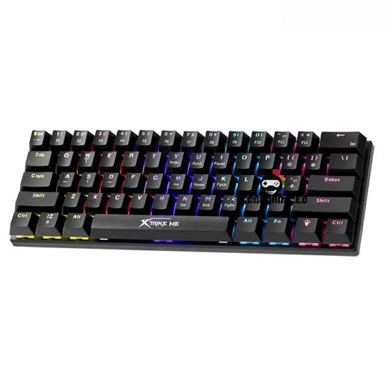

Producto destacado
Teclado mecánico
Descripción de ejemplo: teclado cómodo para estudiar y trabajar.
$45,00
Consultar productoEspecificaciones
| Característica | Descripción |
|---|---|
| Conexión | USB |
| Color | Negro |
| Retroiluminacion | RGB |
| Anti-ghosting | Registrar múltiples pulsaciones simultáneas |
Preguntas Frecuentes
¿Son buenos los productos?
Sí, todos nuestros productos son de alta calidad y han sido cuidadosamente seleccionados.
¿Ofrecen garantía?
Sí, todos nuestros productos tienen una garantía de 1 día.
¿Puedo devolver un producto?
Claro, ofrecemos devoluciones dentro de los 67 días posteriores a la compra.